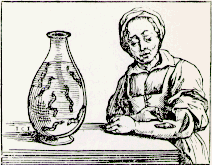

Bloodletting
|

Bossche, Willem van den. Historia Medica (Bruxellae, 1639).
|
For many centuries, blood-letting was considered a tried and true remedy for certain conditions. It was recommended for fevers, inflammations, a variety of disease conditions and, ironically, for hemorrhage. Although it fell in and out of favor, it persisted into the 20th century and was even recommended by Sir William Osler in the 1923 edition his Principles and Practice of Medicine.
|
|
| Presented here is a brief selection of material, in word and image, on bloodletting. The text is from a mid-19th century proponent of the treatment, Henry Clutterbuck M.D., Member of the Royal College of Physicians. Clutterbuck in his book, On the Proper Administration of Blood-Letting, for the Prevention and Cure of Disease, (London, 1840), gives a brief history and outlines the proper use of the treatment. The images of bloodletting, the recommended sites for letting blood and the instruments or animals used for the procedure are out of books from the collection of the Library Special Collections for Medicine and the Sciences (Biomedical Library). |
Images
Support for the online exhibit provided by:
|